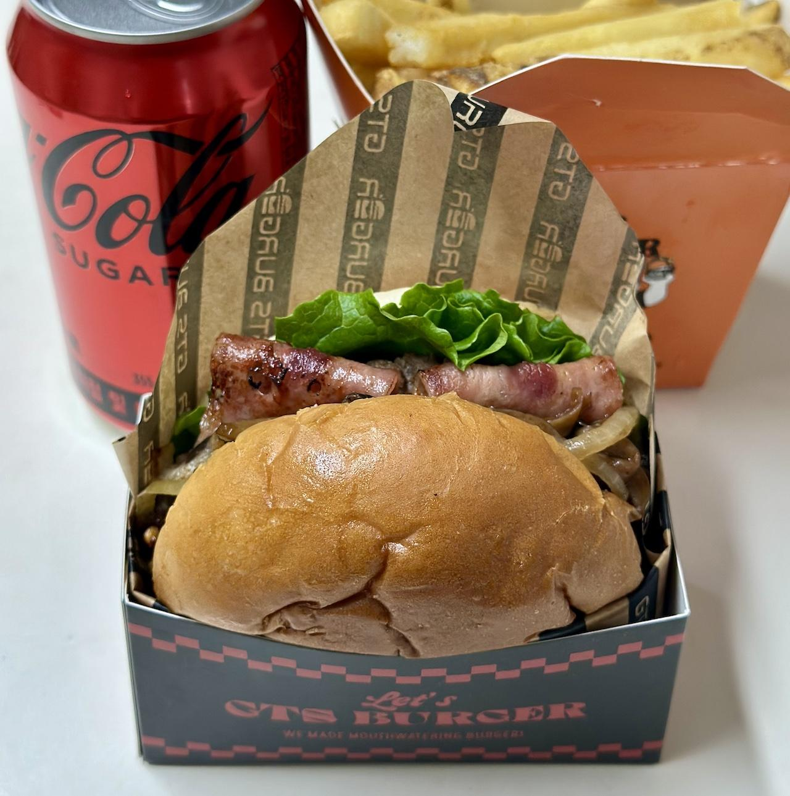

GTS BURGER의 그릴드 머쉬룸 버거에 관한 기록
또 혼자가 된 점심 시간, 오전에 너무 많은 일을 해서 피곤했던 관계로 지쳐서 결국 음식 배달을 시키게 되었다. 역시나 지쳤을 땐 햄버거다. 특히 수제버거다. 만능 피로회복제 수제버거!
찾다보니 새로운 가게를 하나 발견하게 되었다. GTS 버거? 약자가 살짝 궁금해지긴 했지만 아무래도 괜찮았던 게 역시나 수제버거는 눈길을 끄는 아름다움이 있다. 어쨌든 메뉴를 찾아보다보니 머쉬룸 버거가 인기가 좋다길래 주문했다.
실제로 주문한 메뉴는 '그릴드 머쉬룸 버거' 즉 불에 그을려 익힌 버섯 버거이며 세트가 아니라 감자튀김(오리지널 프라이즈)과 제로콜라를 옵션으로 따로 추가했다. 왜냐하면 세트에는 제로콜라가 없어서다. 덕분에 가격은 세트에 비해 천 원 가량 비쌌다. 이 부분이 불만스러웠지만 주문 할 때 요구사항으로 제로콜라 달라고 하면 되지 않았을까 하는 생각이 들기도 했다. 어쨌거나 귀찮게 하는 점은 좀 고쳐줬으면 좋겠다.
어쨌든 주문 후 얼마 시간이 지나지 않아 무사히 배달로 도착했다. 바로 포장을 풀고 감상을 해보자.
 화가 날 것 같은 찌그러진 번
비주얼적으로 굉장한 장점이 있는 버거임에도 큰 문제가 보인다. 바로 번이 심각하게 찌그러지게 포장을 했다는 점이다. 사진에서는 잘 안 보이지만 트레이가 버거에 비해 작아서 트레이에 가려진 번 아랫쪽이 심하게 납작하게 찌그러졌다. 이는 큰 결격 사유다. 번이 찌그러졌음에 따라서 식감에서 좋은 점수를 주기엔 힘들 것 같다. 만약 배달 문제로 찌그러진 거였다면 모르겠지만 말이다.
어쨌거나 찌그러진 번을 제외하고 식감을 평가하자면, 버섯이 꽤나 질긴 편이었다. 그 외에 나름 풍족하게 씹히는 속재료들의 전반적인 느낌은 괜찮았다. 그리고 육즙인지 아니면 소스인지 모르겠지만 제법 촉촉한 느낌도 괜찮았다. 하지만 베이컨의 딱딱한 식감이 좀 방해를 했다.
맛은 훌륭한 편이다. 특히 '그릴드'라는 이름 답게 불맛이 좀 느껴졌다. 하지만 불맛은 좀 먹다 보면 익숙해져서 아무 느낌이 없어지는 게 약간의 단점일 지도 모르겠다. 어쨌거나 전반적으로 기본적인 버거 구성인 만큼 맛도 좋은 편이라고 평가하고 싶다. 과하게 튀는 맛도 없었기에 조화도 괜찮았던 것 같다.
먹기가 좀 힘들었다는 단점도 일단 꼽고 싶다. 소스인지 육즙인지 모르겠지만 기름기 있는 액체가 줄줄 흘려내려서 황급히 닦거나 피하다 다른데 흘리는 등 여러 해프닝이 있었다. 다른 수제버거에도 이런 경우를 종종 겪긴 했지만 역시나 이건 단점이며 식당 측에서 먹기 좋은 포장을 좀 연구해 줬으면 좋겠다.
오리지널 프라이즈는 평범한 수제 감자튀김 맛이었다. 심하게 짜지도 않고 맛도 나쁘진 않았다. 물론 그렇다고 아주 맛있는 것도 아닌 그냥 펑범한 느낌이다.
결론
불행히도 같은 메뉴를 다시 시켜 먹을 생각은 안 들었다. 망가진 번과 질긴 버섯의 식감이 제법 마음에 안 들었기 때문이다.
하지만 같은 집의 다른 메뉴를 시도해 볼 생각은 있다. 전반적인 맛은 나쁘지 않았으니 말이다. 하지만 배달에 한해서 자의적인 선택 가능성은 낮을 것 같다. 어쨌든 번이 심하게 찌그러지는 포장이니 말이다.
이러다 주변의 모든 버거 집의 리뷰를 올리게 될 것 같다. 빨리 그런 날이 왔으면 좋...겠지만 이런 날도 머지 않았을 지도 모르겠다. 어쨌든 이 글은 여기서 마무리 한다.